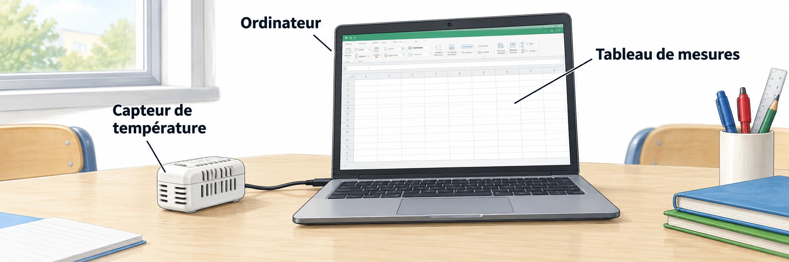

OBSERVER · EXPÉRIMENTER · EXPLIQUER
Les données d’une salle
Trie et filtre les mesures de la salle. Les données restent celles de la fiche.

✎ Garde ta feuille à côté de toi.Sur le site : manipule et observe. Sur ta feuille : relève les résultats et explique tes choix.
Avant de terminer
Vérifie les numéros des questions, les unités et les résultats de tes essais. Compare ensuite avec la correction.